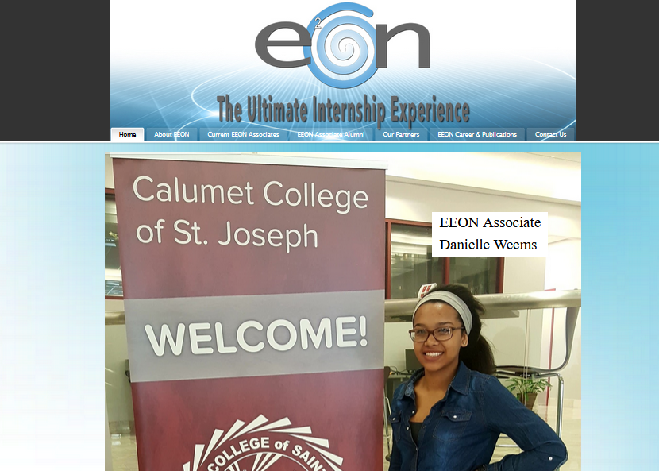

EEON
Rebuilt my school's internship website using Wordpress 
Lena Di Wellness
Contributed to the showcase of the Lena Di Wellness website as a freelance web designer. I used Wordpress and Squarespace to help my client deploy her website.
H.E.F Database & Website
At the Hammond Education Foundation, I built a Microsoft Excel database that simplified processes of tracking on-track graduation statistics of the high schools around NWI. I also developed a website for The Hammond Education Foundation swiftly and efficiently by using Google Sites.